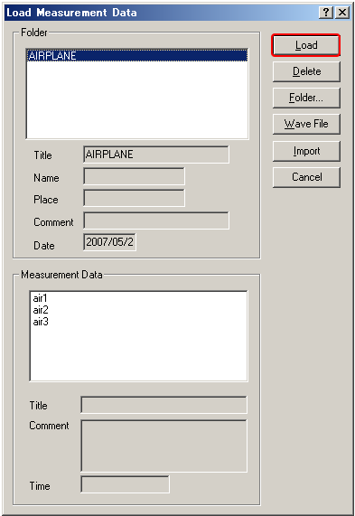
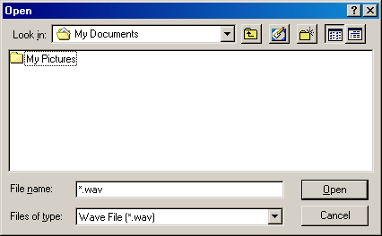

DSSF3 > RA > Running ACF > Measurement guide
Loading the measurement data, wav file, importing the database
Click the Load button to open the "Load Measurement Data" dialog. Saved data is displayed on the dialog. Select the data and click the Load button.

To open the wav file, click the "Wave File" button. In RAD and RAE, loadable wav files are with the resolution of 16 bit. In DSSF3, wav files with 8, 16, and 32 bit can be loaded.
Click the Import button to load the measurement database. When selecting the folder in which the measurement data is saved, a file "FOLDER.DBF" is displayed as shown below. Select this file and click the Open button. By this operation, the previous measurement data is added to the current database. It is useful for comparison of different measurements at a time.

DSSF3 > RA > Running ACF > Measurement guide